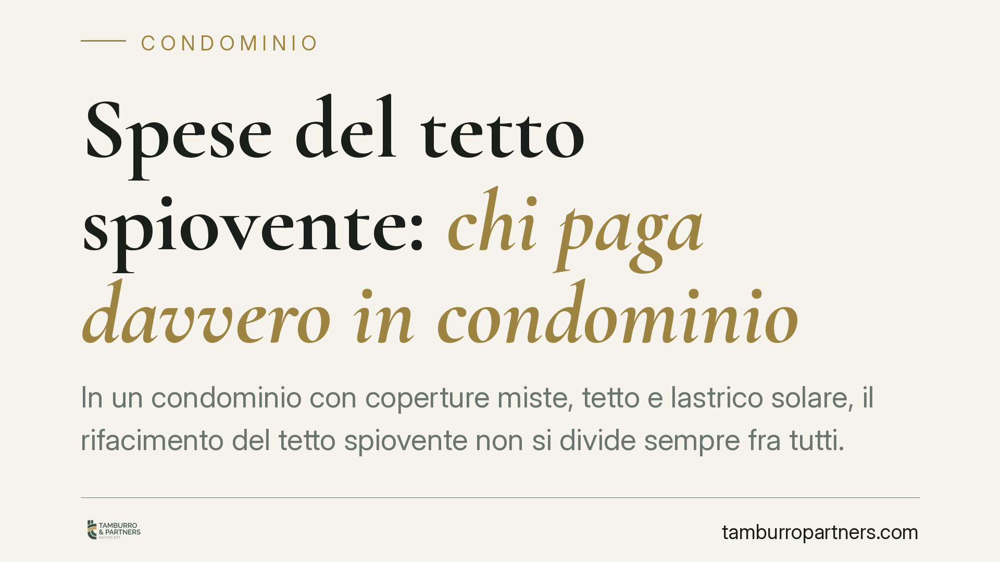

Spese del tetto spiovente: chi paga davvero in condominio
In un condominio con coperture miste, tetto e lastrico solare, il rifacimento del tetto spiovente non si divide sempre fra tutti. Il codice civile àncora l'obbligo di spesa alla funzione di copertura effettiva. Capire chi paga, e in quale misura, evita delibere viziate e contenziosi. Ecco il criterio da applicare e gli errori più frequenti.

Il principio: si paga in base alla funzione di copertura
Il tetto spiovente è di norma parte comune dell'edificio ai sensi dell'art. 1117 cod. civ. Ma essere comproprietari di un bene non significa automaticamente concorrere alle spese per conservarlo.
Qui opera l'art. 1123, comma 3, cod. civ.: quando un edificio ha più parti destinate a servire in modo diverso i condomini, le spese si ripartiscono tra chi di quelle parti trae utilità. È il criterio della funzione di copertura.
In pratica: del rifacimento del tetto spiovente rispondono soltanto i condomini le cui unità rientrano nella proiezione verticale della falda, cioè quelli che da quella copertura ricevono effettiva protezione. Chi abita sotto una porzione servita invece dal lastrico solare non concorre alle spese del tetto, e viceversa.
Gli appartamenti "a cavallo"
Il caso più delicato riguarda le unità che si trovano in parte sotto il tetto spiovente e in parte sotto il lastrico solare.
Qui non esiste un criterio del "tutto o niente". La quota si determina in modo proporzionale, misurando la frazione dell'unità che ricade nella proiezione verticale della falda. L'appartamento concorre alle spese del tetto solo per quella porzione; per il resto risponderà delle spese della diversa copertura che lo sovrasta.
È un calcolo che richiede il riscontro planimetrico e, spesso, il supporto di un tecnico per quantificare le superfici interessate.
Proiezione verticale e tabelle millesimali
Un punto che genera confusione. Le tabelle millesimali generali, quelle di proprietà, non risolvono da sole questo riparto.
Se nel fabbricato esistono gruppi di condomini serviti da coperture diverse, il criterio della proiezione verticale impone una ripartizione per gruppi. Dove le tabelle esistenti non prevedono una colonna dedicata, è opportuno predisporre una tabella specifica che individui quali unità gravitano sotto il tetto spiovente e in quale misura.
In assenza di una tabella ad hoc, l'amministratore deve comunque applicare il criterio legale della funzione di copertura al singolo riparto, non quello millesimale generale.
Se la delibera sbaglia il riparto: annullabile o nulla?
Qui la distinzione è decisiva, e un errore di qualificazione costa caro perché incide sui termini.
Le Sezioni Unite della Cassazione (sent. n. 9839/2021) hanno chiarito due piani diversi:
- La delibera che applica in modo errato i criteri legali di riparto al singolo rendiconto o alla singola spesa è annullabile. Va impugnata entro 30 giorni ex art. 1137 cod. civ.: decorso il termine, la delibera si consolida e diventa inattaccabile.
- La delibera che modifica in via generale e astratta i criteri legali di ripartizione, senza il consenso unanime di tutti i condomini, è invece nulla, e come tale può essere fatta valere senza limiti di tempo.
Tradotto: se l'assemblea addossa a tutti la spesa del tetto applicando male l'art. 1123, siamo di regola nell'area dell'annullabilità. Non ci si può affidare all'idea che "tanto è nulla e la impugno quando voglio": il rischio è lasciar scadere i 30 giorni.
Cosa fare in concreto
- Verificate la copertura effettiva della vostra unità: individuate se gravitate sotto tetto spiovente, lastrico solare o entrambi, con riscontro planimetrico.
- Chiedete all'amministratore il criterio di riparto prima dell'assemblea: deve dichiarare se applica la proiezione verticale e come ha calcolato le quote degli appartamenti a cavallo.
- Pretendete, dove serve, una tabella dedicata per i gruppi serviti da coperture diverse, da approvare con le maggioranze di legge.
- Impugnate entro 30 giorni la delibera che ripartisce male la spesa: il termine ex art. 1137 cod. civ. è perentorio per i vizi di annullabilità.
- Fate verificare la natura del vizio da un professionista prima di agire: distinguere annullabilità e nullità cambia strategia e tempistiche.
La materia incrocia valutazioni tecniche (superfici, planimetrie) e giuridiche (qualificazione del vizio, termini). Un esame preventivo del verbale e delle tabelle consente di scegliere il rimedio corretto nei tempi utili.
Contributo informativo a cura di Tamburro & Partners Avvocati - Avv. Giuseppe Tamburro. Non costituisce parere legale.
Ogni condominio ha una storia a sé.
Se gestisci un'amministrazione e vuoi un confronto su una specifica questione condominiale, scrivi allo studio. Ti rispondiamo entro un giorno lavorativo.